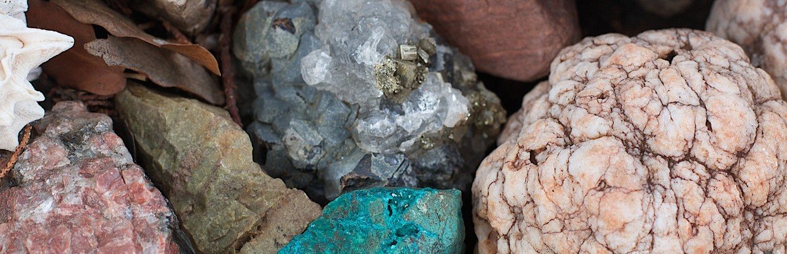
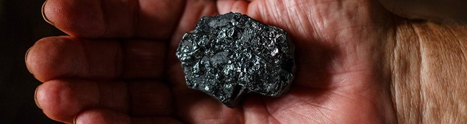
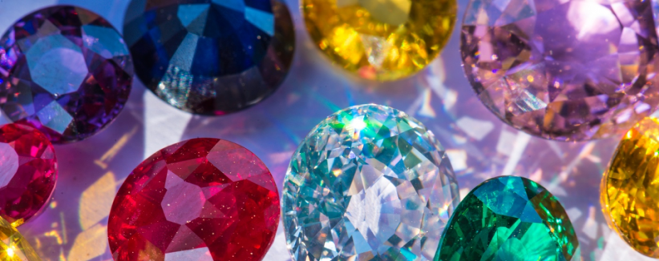
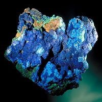
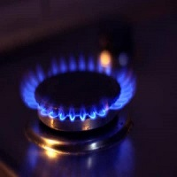
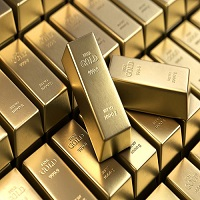

Алмаз
Алмазы, состоящие из углерода, кристаллизуются в кубическую решетку, что
придает им уникальную жесткость и прочность. Они являются самым твердым
естественным материалом на Земле, получившим оценку 10 по шкале Мооса.
Благодаря этой твердости алмазы широко используются в промышленности для
резки и сверления. Хотя большинство алмазов бесцветные, они могут иметь
различные цвета, включая желтый, коричневый, синий, зеленый и даже
розовый.

Кобальт
Кобальт — это химический элемент с символом Co и атомным номером 27. Он
относится к переходным металлам и обладает высокой прочностью,
устойчивостью к коррозии и отличной магнитной проницаемостью. Кобальт
встречается в природе в виде различных минералов, таких как кобальтит и
арсенопирит, и часто добывается в ассоциации с медью и никелем. Кобальт
используется в различных отраслях, включая металлургию, электронику и
производство аккумуляторов.

Калий
Калий — это химический элемент с символом K и атомным номером 19...

Природный газ
Природный газ — это ископаемое топливо, состоящее...

Золото
Золото — это драгоценный металл, обладающий высокой стойкостью к ...